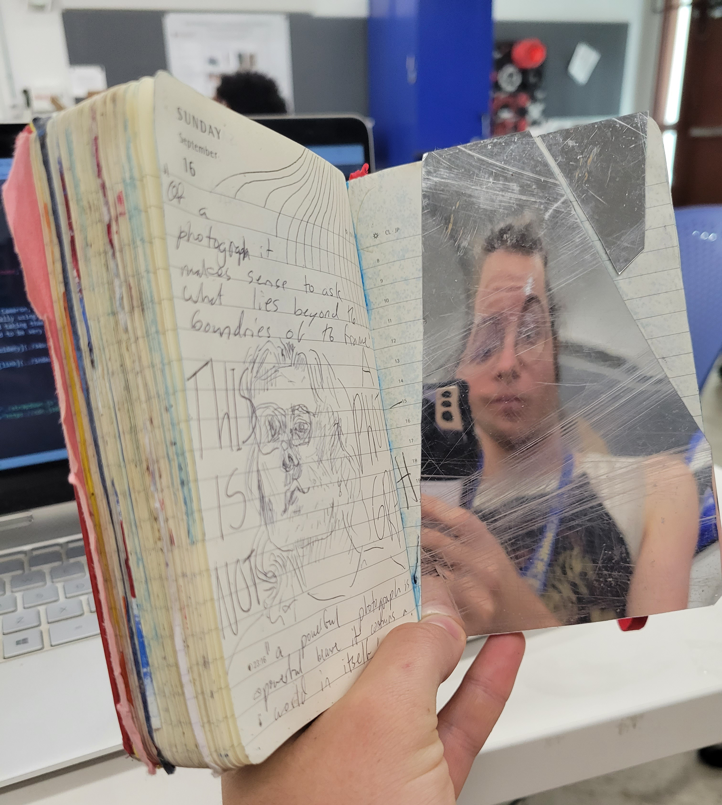

### About Me
Hello! My name is Cameron, I'm a second semester sophmore and an AFVS concentrator. I do lots of theater and I love to build things, usually using scrap or trash materials. I just spent the last seven months working in theater tech, building sets and taking them down - which means I'm pretty good at removing stuck screws, but the backsides of my builds don't tend to be very pretty. Here's a picure of me:

And here is a [link](../index.html).